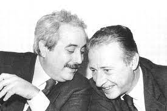
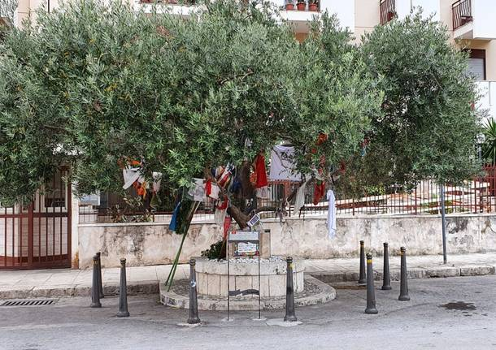

via d'amelio non è trafficata, si tratta infatti di una corta via (non misurera più di 150 metri) a fondo ceco nella parte occidentale di Palermo nei quartieri residenziali, come suggeriscono le due schiere di palazzoni che l'incorniciano. Arrivarci non è difficile, è vicino ad un arteria della citta e non lontano c'e una fermata degli autobus e una stazione, ma perchè fermarsi qui, con un intera citta da visitare?
Palermo ha diversi problemi, la siccita certo, il traffico, come certo noterete, ma soprattutto, la mafia. questa mafia, fatta di boss, affiliati e fiancheggiatori si tratta di un organizzazione antica e per lungo tempo ha governato nell'ombra la società questa società prosperava grazie al pizzo, una sorta di imposta aggiuntiva pagata dai commercianti, dal agricoltura prima, le costruzioni poi e adesso dalla drogha, di cui ne controlla il mercato. la mafia visse per lungo tempo nascosta dall'omertà dei suoi membri ma, dagli anni 60 in poi usci allo scoperto grazie al lavoro dei funzionari di polizia. Per bloccare la giustizia e anche risolvere faide interne iniziò a compiere attentati, sempre più sanguinari e violenti. in tutta palermo fu versato sangue, anche in via d'amelio.
in via d'amelio abitava, ed abita tuttora, la signora borsellino. questa signora, quarant'anni prima, aveva partorito un figlio di nome Paolo e lo aveva cresciuto nel povero quartiere della calsa. quel quartiere era piuttosto malfamato, molti amici d'infanzia di Paolo sono diventati poi mafiosi, ma lui no, assieme ad un altro ragazzo di nome giovanni falcone studiò legge ed entro in magistratura. segui una carriera brillante in varie magistrature del suditalia finchè un giorno, entrò nel pool antimafia, come già aveva fatto giovanni. il pool antimafia era in prima linea nella lotta alla mafia, anche con un certo successo, infatti riuscì a portarla in tribunale in un processo con oltre mille imputati, il famoso maxiprocesso. dopo più di un anno il processo terminò con un numero considerevole di condanne. la mafia però riprese con le stragi e, il 23 maggio 1992, assassinò giovanni falcone nella stage di capaci.
morto falcone ora toccava a borsellino, tutti a palermo lo sapevano. anche il giudice lo sapeva, ma nonostante questo continuava ad andare avanti. pochi mesi dopo capaci la madre di borsellino prenotò una visita dal dentista, il figlio si offri di accompagnarla. arrivato in via d'amelio scese dall'auto e suonò il campanello. una fiat 124 bianca esplose, uccidendolo.
oggi in via d'amelio, su consiglio della stessa madre di borsellino, è stato piantato un albero. chi viene a vederlo può lasciare lì un oggetto (appeso all'albero si trova di tutto, da braccialetti e bandane fino alle bandiere, senza dimenticare disegni e pure qualche accendino). si può anche passare di lì senza lasciare nulla, rifletttendo sulla storia di questa corta ma significativa via.